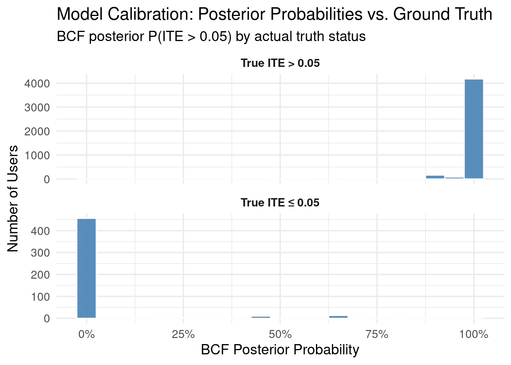

24.1 Why do we need a causal framework for propensity modeling?
Business data scientists in the tech industry frequently face the task of identifying which users to nudge toward a desired action. Consider a few common examples:
Encouraging long-form video creators to experiment with shorter formats like Shorts or Reels.
Prompting prolific product reviewers to establish their own storefront.
Selecting the most suitable candidates for an exclusive event invitation.
Offering a complimentary trial or a discount on a service.
This might seem like a standard prediction problem: who is most likely to take action X? Yet, such an approach is incomplete. Focusing solely on prediction risks expending resources on users who would have taken the action anyway, irrespective of any nudge. The crucial element here is causality—pinpointing individuals whose behavior will change because of our intervention.
When we think about causal propensity, two key principles emerge:
Receptivity: A user’s propensity to act due to a nudge is meaningful only if they are, in fact, receptive to that nudge. If they’re not going to pay attention or be influenced, the nudge is irrelevant for them. An intervention cannot cause a change if the user isn’t open to it.
Sustained Impact (Avoiding Regret): True high propensity implies that the user not only takes the desired action but continues it long-term, signaling a genuinely positive experience. A fleeting change followed by disengagement or ‘regret’ isn’t the goal; we’re interested in interventions that lead to lasting, beneficial changes in behavior.
Furthermore, a common oversight is the imprecise definition of ‘success’ when estimating propensity. Take a shopping scenario, for instance. One might be tempted to predict the intervention’s impact on revenue per user. However, a specific percentage or dollar increase in revenue might be significant and worthwhile for some users, yet inconsequential or even detrimental for others (perhaps they purchase, regret it, and churn). This is where the principle of revealed preferences comes in handy. Observing continued engagement with the desired action serves as a practical proxy, suggesting the user finds the action valuable enough to persist. It tells us the intervention was likely a good fit for them.
24.2 An Example with Synthetic Data
Let’s illustrate with a synthetic example. Imagine a company, SaaSify Solutions, which provides “TaskMaster,” a project management tool. TaskMaster has a free basic tier and a premium “Pro Tier.” To boost conversions to the paid Pro Tier, SaaSify decides to offer a one-month free trial. The Pro Tier boasts advanced features such as team collaboration, detailed analytics, and automation.
The Challenge: Identifying the Right Users for the Free Trial
The teams at SaaSify understand that a free trial isn’t universally effective. Their objective is to measure the causal impact of the Pro Tier trial. Specifically, they want to determine how offering the trial influences a user’s probability of subscribing to the paid tier three months down the line, relative to users not offered the trial. The aim is to target users for whom the trial will be most impactful and avoid offering it where it’s likely to be ineffective or, worse, counterproductive.
To achieve this, they randomly assign the free trial offer to a subset of users—this randomization is key for causal inference. The outcome of interest is the subscription status three months after the trial offer. The R code that follows generates synthetic data for this scenario.
# ── pkgs ────────────────────────────────────────────────────────────────────────library(dplyr)library(tidyr)library(tibble)library(ggplot2)library(dplyr)library(tibble)library(ggplot2)# ── 0. helpers ─────────────────────────────────────────────────────────────────# Clips a numeric vector to a specified lower and upper boundclip_values <-function(x, lo =0, hi =150)pmin(pmax(x, lo), hi)# Inverse logit function (same as plogis)inv_logit <- plogis# ── 1. configuration ───────────────────────────────────────────────────────────cfg <-list(n_users =50000,prop_offered_trial =0.50,# Baseline subscription model coefficients (log-odds scale)# log_odds(Subscribed | X, Trial=0)beta =c(intercept =-3.5,# Overall low baseline subscription propensityactivity_free =0.6,# Higher free tier activity -> more likely to subscribe naturallyproject_manager =0.8,# Project Managers more likely to subscribe naturallyfeature_requests =0.5,# Interacted with feature requests -> more likelyfreelancer =-0.2# Freelancers slightly less likely at baseline (or neutral) ),# Treatment effect model coefficients (CHANGE in log-odds DUE TO the trial offer)# delta_log_odds = tau_intercept + tau_activity_free*activity_free + ...tau =c(intercept_trial_effect =1.2,# General positive effect of the trial offeractivity_free_trial_effect =0.7,# Trial is more effective for more active free usersproject_manager_trial_effect =1.0,# Trial is particularly effective for Project Managersfeature_requests_trial_effect =0.6,# Trial effective if they showed interest in featuresinteraction_freelancer_low_activity =-4.0# Strong negative effect for low-activity freelancers ),# Probabilities for user rolesuser_role_prob =c(Freelancer =0.30,ProjectManager =0.15,SmallBusinessOwner =0.25,Student =0.15,TeamMember =0.15 ),# Parameters for raw_activity_score generation (gamma distribution)activity_score_shape =3,activity_score_rate =0.5,activity_score_multiplier =10,# Quantile for defining "low activity"low_activity_quantile =0.30,# Proportion of users who interacted with feature requestsprop_interacted_feature_requests =0.20)set.seed(123) # For reproducibility# ── 2. simulate covariates ─────────────────────────────────────────────────────raw_users_data <-tibble(user_id =seq_len(cfg$n_users),# Free tier activity levelraw_activity_score =rgamma( cfg$n_users,shape = cfg$activity_score_shape,rate = cfg$activity_score_rate ) * cfg$activity_score_multiplier,# User roleuser_role =sample(names(cfg$user_role_prob), cfg$n_users,replace =TRUE,prob = cfg$user_role_prob ),# Engagement with feature requestshas_interacted_feature_requests =rbinom(cfg$n_users, 1, cfg$prop_interacted_feature_requests)) %>%mutate(raw_activity_score =clip_values(raw_activity_score, 0, 150),# Apply clippingscaled_activity_free =as.numeric(scale(raw_activity_score)),is_freelancer =as.integer(user_role =="Freelancer"),is_project_manager =as.integer(user_role =="ProjectManager"),is_low_activity_user = scaled_activity_free <quantile(scaled_activity_free, cfg$low_activity_quantile, na.rm =TRUE),offered_free_trial =rbinom(n(), 1, cfg$prop_offered_trial) # Use n() for current group size in mutate )# ── 3. potential outcomes & realised subscription ───────────────────────────────simulated_data <-with(cfg, { raw_users_data %>%mutate(# Counterfactual log-odds of subscribing WITHOUT the trial offer (Y_0)logodds_0_subscribe_no_trial = beta["intercept"] + beta["activity_free"] * scaled_activity_free + beta["project_manager"] * is_project_manager + beta["feature_requests"] * has_interacted_feature_requests + beta["freelancer"] * is_freelancer,# Delta log-odds due to the trial offer (treatment effect on log-odds scale)delta_logodds_trial_effect = tau["intercept_trial_effect"] + tau["activity_free_trial_effect"] * scaled_activity_free + tau["project_manager_trial_effect"] * is_project_manager + tau["feature_requests_trial_effect"] * has_interacted_feature_requests + tau["interaction_freelancer_low_activity"] * is_freelancer * is_low_activity_user,# Counterfactual log-odds of subscribing WITH the trial offer (Y_1)logodds_1_subscribe_with_trial = logodds_0_subscribe_no_trial + delta_logodds_trial_effect,# Convert log-odds to probabilitiesp0_subscribe_no_trial =inv_logit(logodds_0_subscribe_no_trial),p1_subscribe_with_trial =inv_logit(logodds_1_subscribe_with_trial),# Individual Treatment Effect (ITE)ITE_prob_subscribe = p1_subscribe_with_trial - p0_subscribe_no_trial,# On probability scaleITE_logodds_subscribe = delta_logodds_trial_effect,# On log-odds scale# Simulate the OBSERVED outcome based on trial offer assignmentis_subscribed_after_3months =rbinom(n(),1,if_else( offered_free_trial ==1, p1_subscribe_with_trial, p0_subscribe_no_trial ) ) )})# ── 4. quick diagnostics ──────────────────────────────────────────────────────true_ATE_prob <-mean(simulated_data$ITE_prob_subscribe, na.rm =TRUE)cat(sprintf("True Average Treatment Effect (ATE) on probability scale (Subscription): %.4f\n", true_ATE_prob ))
True Average Treatment Effect (ATE) on probability scale (Subscription): 0.1596
Now that we have our synthetic data, which includes user characteristics, whether they were offered a trial (the treatment), and their subsequent subscription status (the outcome), we can move on to modeling. We’ll use the stochtree package to implement Bayesian Causal Forests (BCF). BCF is well-suited for estimating heterogeneous treatment effects, which is precisely what we’re interested in: how does the trial’s effect vary across different types of users?
After fitting the BCF model, we can extract and summarize the posterior distributions of the treatment effects. This allows us to understand not only the average treatment effect (ATE) across all users but also the individual treatment effects (ITEs) for each user
## ------------------------------------------------------------## 4 / Posterior summaries## – Individual treatment effects (ITE)## – Average treatment effect (ATE) + 95 % CI## ------------------------------------------------------------ite_bcf_draws <- bcf_fit$tau_hat_train # n × draws matrix# add posterior mean ITE back to the simulation tibblesimulated_data <- simulated_data %>%mutate(ITE_bcf =rowMeans(ite_bcf_draws))# ATE posterior distributionate_bcf_draws <-colMeans(ite_bcf_draws)ate_bcf_mean <-mean(ate_bcf_draws)ate_bcf_ci <-quantile(ate_bcf_draws, c(.025, .975))message(sprintf("BCF ATE (posterior mean): %.4f – 95%% CI: [%.4f, %.4f]", ate_bcf_mean, ate_bcf_ci[1], ate_bcf_ci[2]))
BCF ATE (posterior mean): 0.1616 – 95% CI: [0.1564, 0.1660]
The real power of BCF lies in its ability to uncover treatment effect heterogeneity. Let’s visualize how the estimated ITE varies with user activity levels. We’ll bin users by their scaled free-tier activity and plot the mean true ITE (from our data generating process) against the BCF’s posterior mean ITE, along with a credible interval.
## ------------------------------------------------------------## Continuous heterogeneity: ribbon = 75 % BCF credible interval## ------------------------------------------------------------library(dplyr)library(ggplot2)## 1. Bin the activity covariate (40 quantile bins)n_bins <-40simulated_data <- simulated_data %>%mutate(act_bin =ntile(scaled_activity_free, n_bins))## 2. Pre-compute: mean of scaled_activity_free & true ITE for each binbin_stats <- simulated_data %>%group_by(act_bin) %>%summarise(x_mid =mean(scaled_activity_free),true_ite =mean(ITE_prob_subscribe),.groups ="drop" )## 3. Posterior mean ITE per bin, for every MCMC drawn_draws <-ncol(ite_bcf_draws)# indices for faster split-applybin_index <- simulated_data$act_bindraw_means <-matrix(NA_real_, nrow = n_draws, ncol = n_bins)for (b in1:n_bins) { rows_b <-which(bin_index == b)# average ITE in that bin for each draw (vectorised colMeans) draw_means[, b] <-colMeans(ite_bcf_draws[rows_b, , drop =FALSE])}## 4. Posterior summary: mean & 75 % CIbcf_mean <-colMeans(draw_means)bcf_lower <-apply(draw_means, 2, quantile, probs =0.125)bcf_upper <-apply(draw_means, 2, quantile, probs =0.875)bin_stats <- bin_stats %>%mutate(bcf_mean = bcf_mean,bcf_lower = bcf_lower,bcf_upper = bcf_upper )## 5. Plotggplot(bin_stats, aes(x_mid)) +geom_ribbon(aes(ymin = bcf_lower,ymax = bcf_upper),fill ="darkgreen",alpha =0.25) +geom_line(aes(y = bcf_mean,colour ="BCF"),linewidth =1.2) +geom_line(aes(y = true_ite,colour ="True ITE"),linewidth =1.2) +scale_colour_manual(values =c("True ITE"="blue","BCF"="darkgreen"),name =NULL) +labs(title ="ITE heterogeneity by free-tier activity",x ="Scaled free-tier activity",y ="Individual treatment effect") +theme_minimal(base_size =14) +theme(legend.position ="bottom",legend.margin =margin(t =-4))
We can also examine how well the BCF model identifies users whose true ITE exceeds a certain threshold. This is often a practical concern: who are the users for whom the intervention is “meaningfully” positive?
## ------------------------------------------------------------## Visual: BCF posterior P(ITE > thresh) vs. truth label## ------------------------------------------------------------thresh <-0.05# target treatment-effect threshold# 1) posterior P(ITE > thresh | data, model)p_bcf_gt <-rowMeans(ite_bcf_draws > thresh)# 2) ground-truth indicator from the DGPsim <- simulated_data %>%mutate(true_gt = ITE_prob_subscribe > thresh)# 3) long format for ggplotbcf_long <- sim %>%transmute(TruthLabel =factor(ifelse(true_gt,paste0("ITE > ", thresh),paste0("ITE \u2264 ", thresh)) # ≤ symbol ),PostProb = p_bcf_gt )# 4) histogram by truth labelggplot(bcf_long, aes(PostProb)) +geom_histogram(binwidth =0.02,fill ="steelblue",colour ="white",alpha =0.9) +facet_wrap(~ TruthLabel,ncol =1,scales ="fixed") +scale_x_continuous(limits =c(0, 1),breaks =seq(0, 1, 0.25)) +scale_y_continuous(limits =c(0, 1000)) +labs(title =paste0("BCF posterior P(ITE > ", thresh, ") by truth label"),x ="Posterior probability",y ="Users" ) +theme_minimal(base_size =18) +theme(strip.text =element_text(face ="bold")) +scale_x_continuous(limits =c(0, 1),breaks =seq(0, 1, 0.25),labels = scales::percent_format(accuracy =1) # 0%, 25%, … 100%)
Finally, let’s look at Conditional Average Treatment Effects (CATEs) by user role. This provides a summary of how the treatment effect, both true and BCF-estimated, varies across predefined user segments.
## ------------------------------------------------------------## CATE heterogeneity by user role (truth vs. BCF estimate)## ------------------------------------------------------------simulated_data %>%pivot_longer(cols =c(ITE_prob_subscribe, ITE_bcf), # true vs. modelnames_to ="Type",values_to ="ITE" ) %>%mutate(Type =recode( Type,ITE_prob_subscribe ="True ITE",ITE_bcf ="BCF" ) ) %>%ggplot(aes(user_role, ITE, fill = Type)) +geom_boxplot(width =0.8,position =position_dodge(width =0.9),outlier.alpha =0.15 ) +scale_fill_manual(values =c("True ITE"="blue","BCF"="darkgreen"),name =NULL ) +labs(title ="CATE heterogeneity by user role",x ="User role",y ="Individual treatment effect" ) +theme_minimal(base_size =14) +theme(axis.text.x =element_text(angle =25, hjust =1),strip.text =element_text(face ="bold") )

24.4 Prioritising control-group creators for a follow-up nudge
One common “Phase-2” use-case is to re-target users who were originally in the control group but appear—according to the model—to be the most likely to benefit from receiving the treatment.
Below we illustrate a principled, fully Bayesian way to do that.
Goal: pick the N creators (say N = 1000) in the control group whose posterior probability of belonging to the true top-N is highest.
Method
For every posterior draw (d = 1,,D) of the BCF we already have an ITE estimate (_{id}) for each creator (i).
Within each draw we
keep only the control-group creators
rank them by (_{id}) (descending)
mark the top N with a 1, the rest with 0.
Averaging those indicators across draws gives
[ p_i ;=; 1D _{d=1}^D {iNd}, ] the posterior probability that creator (i) truly belongs to the top-N.
We select the N control creators with the largest (p_i).
Finally we check, using the hidden ground-truth ITE from the DGP, how many of our picks actually are in the true top-N.
## ------------------------------------------------------------## Target the N control creators with highest posterior P(top-N)## ------------------------------------------------------------N_target <-1000## 1. isolate control-group rows & their ITE draws -------------control_idx <-which(Z_treat ==0)ite_control_draws <- ite_bcf_draws[control_idx, ] # m × D## 2. indicator: 1 if creator is in top-N for draw d -----------indicator <-apply( ite_control_draws, 2L,function(draw_vec) { top <-order(draw_vec, decreasing =TRUE)[seq_len(N_target)] idx <-integer(length(draw_vec)); idx[top] <-1 idx })## 3. posterior probability of being in top-N ------------------prob_topN <-rowMeans(indicator) # length = m## 4. add to main tibble ---------------------------------------simulated_data$prob_topN <-NA_real_simulated_data$prob_topN[control_idx] <- prob_topN## 5. pick the creators with highest P(top-N) -------------------selected <- simulated_data %>%filter(offered_free_trial ==0) %>%slice_max(prob_topN, n = N_target, with_ties =FALSE)## 6. evaluate against ground truth -----------------------------truth_ranks <- simulated_data %>%filter(offered_free_trial ==0) %>%mutate(true_rank =rank(-ITE_prob_subscribe, ties.method ="min")) %>%select(user_id, true_rank)selected <- selected %>%left_join(truth_ranks, by ="user_id") %>%mutate(hit = true_rank <= N_target)hit_rate <-mean(selected$hit)message(sprintf("Model picked %d of the true top %d creators (hit-rate = %.1f%%).",sum(selected$hit), N_target, 100* hit_rate))
We can also examine the false positive with the code bellow:
## ------------------------------------------------------------## False-positives: creators picked by the model but *not*## in the true top-N (how wrong are we?)## ------------------------------------------------------------false_pos <- selected %>%filter(!hit) %>%# keep only the missesarrange(true_rank) %>%# smaller rank = closer to the cut-offselect( user_id, prob_topN, # posterior P(being top-N) true_rank, # ground-truth rank ITE_prob_subscribe, # true ITE (prob. scale) ITE_bcf # posterior mean ITE )# peek at the first 15 for a sense of magnitudeknitr::kable(head(false_pos, 15),caption =paste0("Top 15 false-positives (model-selected but true rank > ", N_target, ")" ),digits =3)
Top 15 false-positives (model-selected but true rank > 1000)
user_id
prob_topN
true_rank
ITE_prob_subscribe
ITE_bcf
16206
0.715
1010
0.646
0.651
4773
0.715
1015
0.645
0.651
15871
0.715
1018
0.645
0.651
20776
0.711
1024
0.644
0.651
21732
0.950
1025
0.644
0.641
11853
0.979
1031
0.643
0.641
8947
1.000
1032
0.643
0.786
30510
0.838
1039
0.642
0.641
44833
1.000
1042
0.642
0.786
13458
0.971
1044
0.642
0.641
33249
0.760
1045
0.642
0.641
12907
1.000
1046
0.641
0.786
5234
1.000
1047
0.641
0.786
19511
0.710
1050
0.640
0.651
26273
0.882
1052
0.640
0.641
# summary stats: how far off are we on average?summary(false_pos$true_rank)
Min. 1st Qu. Median Mean 3rd Qu. Max.
1010 1252 1402 1445 1700 1952
24.5 Take-aways — What to remember before you hit “Send Nudge”
Causality beats raw prediction
Don’t waste offers on the “sure-thing” crowd. Causal propensity models single out the users whose behaviour is expected to change because of your intervention, not the ones who were already halfway there.
Randomisation is your super-power
A/B assignment (or any well-designed experiment) manufactures the missing counterfactual. Without it, every downstream estimate—however sophisticated—rests on unverifiable assumptions.
Heterogeneity is the rule, not the exception
Bayesian Causal Forests surface nuanced, non-linear treatment patterns that simple uplift models miss. They let you
Measure individual treatment effects (ITEs) — a per-user ROI forecast.
Rank control-group users by posterior “top-N” probability — a principled way to choose whom to target next.
Summarise conditional ATEs (CATEs) for segments your business cares about — fuel for clear, defensible strategy.
Efficiency follows from focus
By steering incentives to users with high posterior gain—and sparing those likely to regret or ignore them—you compress spend, boost long-run value, and create experiments that keep paying for themselves.
TL;DR: Wrap your propensity work in a causal cloak: randomise, model heterogeneity, act on posterior uncertainty, and watch both your precision and your business impact climb.
Source Code
---title: "Causal Propensity Modeling"share: permalink: "https://book.martinez.fyi/causalPropensity.html" description: "Business Data Science: What Does it Mean to Be Data-Driven?" linkedin: true email: true mastodon: true---## Why do we need a causal framework for propensity modeling?<img src="img/causal_propensity.png" align="right" height="280" alt="Causal Propensity Modeling with BCF"/>Business data scientists in the tech industry frequently face the task ofidentifying **which users to nudge toward a desired action**. Consider a fewcommon examples: - Encouraging long-form video creators to experiment with shorter formats like Shorts or Reels. - Prompting prolific product reviewers to establish their own storefront. - Selecting the most suitable candidates for an exclusive event invitation. - Offering a complimentary trial or a discount on a service.This might seem like a standard prediction problem: who is most likely to takeaction X? Yet, such an approach is incomplete. Focusing solely on predictionrisks expending resources on users who would have taken the action anyway,irrespective of any nudge. The crucial element here is **causality**—pinpointingindividuals **whose behavior will change *because* of our intervention.**When we think about causal propensity, two key principles emerge:1. **Receptivity**: A user's propensity to act due to a nudge is meaningful only if they are, in fact, receptive to that nudge. If they're not going to pay attention or be influenced, the nudge is irrelevant for them. An intervention cannot *cause* a change if the user isn't open to it.2. **Sustained Impact (Avoiding Regret)**: True high propensity implies that the user not only takes the desired action but continues it long-term, signaling a genuinely positive experience. A fleeting change followed by disengagement or 'regret' isn't the goal; we're interested in interventions that lead to lasting, beneficial changes in behavior.Furthermore, a common oversight is the imprecise definition of 'success' whenestimating propensity. Take a shopping scenario, for instance. One might betempted to predict the intervention's impact on revenue per user. However, aspecific percentage or dollar increase in revenue might be significant andworthwhile for some users, yet inconsequential or even detrimental for others(perhaps they purchase, regret it, and churn). This is where the principle of**revealed preferences** comes in handy. Observing continued engagement with thedesired action serves as a practical proxy, suggesting the user finds the actionvaluable enough to persist. It tells us the intervention was likely a good fitfor them.## An Example with Synthetic DataLet's illustrate with a synthetic example. Imagine a company, SaaSify Solutions,which provides "TaskMaster," a project management tool. TaskMaster has a freebasic tier and a premium "Pro Tier." To boost conversions to the paid Pro Tier,SaaSify decides to offer a one-month free trial. The Pro Tier boasts advancedfeatures such as team collaboration, detailed analytics, and automation.### The Challenge: Identifying the Right Users for the Free TrialThe teams at SaaSify understand that a free trial isn't universally effective.Their objective is to measure the **causal impact** of the Pro Tier trial.Specifically, they want to determine how offering the trial influences a user'sprobability of subscribing to the paid tier three months down the line, relativeto users not offered the trial. The aim is to target users for whom the trialwill be most impactful and avoid offering it where it's likely to be ineffectiveor, worse, counterproductive.To achieve this, they randomly assign the free trial offer to a subset ofusers—this randomization is key for causal inference. The outcome of interestis the subscription status three months after the trial offer. The R code thatfollows generates synthetic data for this scenario.```{r}#| message: false# ── pkgs ────────────────────────────────────────────────────────────────────────library(dplyr)library(tidyr)library(tibble)library(ggplot2)library(dplyr)library(tibble)library(ggplot2)# ── 0. helpers ─────────────────────────────────────────────────────────────────# Clips a numeric vector to a specified lower and upper boundclip_values <-function(x, lo =0, hi =150)pmin(pmax(x, lo), hi)# Inverse logit function (same as plogis)inv_logit <- plogis# ── 1. configuration ───────────────────────────────────────────────────────────cfg <-list(n_users =50000,prop_offered_trial =0.50,# Baseline subscription model coefficients (log-odds scale)# log_odds(Subscribed | X, Trial=0)beta =c(intercept =-3.5,# Overall low baseline subscription propensityactivity_free =0.6,# Higher free tier activity -> more likely to subscribe naturallyproject_manager =0.8,# Project Managers more likely to subscribe naturallyfeature_requests =0.5,# Interacted with feature requests -> more likelyfreelancer =-0.2# Freelancers slightly less likely at baseline (or neutral) ),# Treatment effect model coefficients (CHANGE in log-odds DUE TO the trial offer)# delta_log_odds = tau_intercept + tau_activity_free*activity_free + ...tau =c(intercept_trial_effect =1.2,# General positive effect of the trial offeractivity_free_trial_effect =0.7,# Trial is more effective for more active free usersproject_manager_trial_effect =1.0,# Trial is particularly effective for Project Managersfeature_requests_trial_effect =0.6,# Trial effective if they showed interest in featuresinteraction_freelancer_low_activity =-4.0# Strong negative effect for low-activity freelancers ),# Probabilities for user rolesuser_role_prob =c(Freelancer =0.30,ProjectManager =0.15,SmallBusinessOwner =0.25,Student =0.15,TeamMember =0.15 ),# Parameters for raw_activity_score generation (gamma distribution)activity_score_shape =3,activity_score_rate =0.5,activity_score_multiplier =10,# Quantile for defining "low activity"low_activity_quantile =0.30,# Proportion of users who interacted with feature requestsprop_interacted_feature_requests =0.20)set.seed(123) # For reproducibility# ── 2. simulate covariates ─────────────────────────────────────────────────────raw_users_data <-tibble(user_id =seq_len(cfg$n_users),# Free tier activity levelraw_activity_score =rgamma( cfg$n_users,shape = cfg$activity_score_shape,rate = cfg$activity_score_rate ) * cfg$activity_score_multiplier,# User roleuser_role =sample(names(cfg$user_role_prob), cfg$n_users,replace =TRUE,prob = cfg$user_role_prob ),# Engagement with feature requestshas_interacted_feature_requests =rbinom(cfg$n_users, 1, cfg$prop_interacted_feature_requests)) %>%mutate(raw_activity_score =clip_values(raw_activity_score, 0, 150),# Apply clippingscaled_activity_free =as.numeric(scale(raw_activity_score)),is_freelancer =as.integer(user_role =="Freelancer"),is_project_manager =as.integer(user_role =="ProjectManager"),is_low_activity_user = scaled_activity_free <quantile(scaled_activity_free, cfg$low_activity_quantile, na.rm =TRUE),offered_free_trial =rbinom(n(), 1, cfg$prop_offered_trial) # Use n() for current group size in mutate )# ── 3. potential outcomes & realised subscription ───────────────────────────────simulated_data <-with(cfg, { raw_users_data %>%mutate(# Counterfactual log-odds of subscribing WITHOUT the trial offer (Y_0)logodds_0_subscribe_no_trial = beta["intercept"] + beta["activity_free"] * scaled_activity_free + beta["project_manager"] * is_project_manager + beta["feature_requests"] * has_interacted_feature_requests + beta["freelancer"] * is_freelancer,# Delta log-odds due to the trial offer (treatment effect on log-odds scale)delta_logodds_trial_effect = tau["intercept_trial_effect"] + tau["activity_free_trial_effect"] * scaled_activity_free + tau["project_manager_trial_effect"] * is_project_manager + tau["feature_requests_trial_effect"] * has_interacted_feature_requests + tau["interaction_freelancer_low_activity"] * is_freelancer * is_low_activity_user,# Counterfactual log-odds of subscribing WITH the trial offer (Y_1)logodds_1_subscribe_with_trial = logodds_0_subscribe_no_trial + delta_logodds_trial_effect,# Convert log-odds to probabilitiesp0_subscribe_no_trial =inv_logit(logodds_0_subscribe_no_trial),p1_subscribe_with_trial =inv_logit(logodds_1_subscribe_with_trial),# Individual Treatment Effect (ITE)ITE_prob_subscribe = p1_subscribe_with_trial - p0_subscribe_no_trial,# On probability scaleITE_logodds_subscribe = delta_logodds_trial_effect,# On log-odds scale# Simulate the OBSERVED outcome based on trial offer assignmentis_subscribed_after_3months =rbinom(n(),1,if_else( offered_free_trial ==1, p1_subscribe_with_trial, p0_subscribe_no_trial ) ) )})# ── 4. quick diagnostics ──────────────────────────────────────────────────────true_ATE_prob <-mean(simulated_data$ITE_prob_subscribe, na.rm =TRUE)cat(sprintf("True Average Treatment Effect (ATE) on probability scale (Subscription): %.4f\n", true_ATE_prob ))# Distribution of all ITEsp_all_ites <- simulated_data %>%ggplot(aes(x = ITE_prob_subscribe)) +geom_histogram(bins =60,fill ="steelblue",color ="white",alpha =0.8 ) +geom_vline(xintercept = true_ATE_prob,color ="red",linetype ="dashed",linewidth =1 ) +annotate("text",x = true_ATE_prob,y =Inf,label =sprintf("ATE = %.3f", true_ATE_prob),hjust =-0.1,vjust =1.5,color ="red" ) +labs(title ="Distribution of Individual Treatment Effects (ITEs) on Subscription Probability",x =expression("ITE (p"[1] *" - p"[0] *")"),y ="Frequency") +theme_minimal()print(p_all_ites)# --- Subgroup Analysis: "Overwhelmed Novice" Freelancers ---overwhelmed_novice_freelancers_data <- simulated_data %>%filter(is_freelancer ==1& is_low_activity_user ==1)cat("\nSummary of ITEs for 'Overwhelmed Novice' Freelancers (Low Activity):\n")print(summary(overwhelmed_novice_freelancers_data$ITE_prob_subscribe))cat(sprintf("Proportion of this group with negative ITE: %.3f\n",mean( overwhelmed_novice_freelancers_data$ITE_prob_subscribe <0,na.rm =TRUE )))p_novice_freelancers_ites <- overwhelmed_novice_freelancers_data %>%ggplot(aes(x = ITE_prob_subscribe)) +geom_histogram(bins =30,fill ="darkorange",color ="white",alpha =0.8 ) +geom_vline(xintercept =mean( overwhelmed_novice_freelancers_data$ITE_prob_subscribe,na.rm =TRUE ),color ="blue",linetype ="dashed",linewidth =1 ) +labs(title ="ITE Distribution for 'Overwhelmed Novice' Freelancers",x =expression("ITE (p"[1] *" - p"[0] *")"),y ="Frequency") +theme_minimal()print(p_novice_freelancers_ites)# --- Subgroup Analysis: High Activity Project Managers ---high_activity_pms_data <- simulated_data %>%filter( is_project_manager ==1& scaled_activity_free >quantile(scaled_activity_free, 0.70, na.rm =TRUE) )cat("\nSummary of ITEs for High Activity Project Managers:\n")print(summary(high_activity_pms_data$ITE_prob_subscribe))cat(sprintf("Proportion of this group with positive ITE: %.3f\n",mean(high_activity_pms_data$ITE_prob_subscribe >0, na.rm =TRUE)))p_high_pms_ites <- high_activity_pms_data %>%ggplot(aes(x = ITE_prob_subscribe)) +geom_histogram(bins =30,fill ="forestgreen",color ="white",alpha =0.8 ) +geom_vline(xintercept =mean(high_activity_pms_data$ITE_prob_subscribe, na.rm =TRUE),color ="blue",linetype ="dashed",linewidth =1 ) +labs(title ="ITE Distribution for High Activity Project Managers",x =expression("ITE (p"[1] *" - p"[0] *")"),y ="Frequency") +theme_minimal()print(p_high_pms_ites)# ── 5. quick peek at the data ───────────────────────────────────────────────────glimpse(simulated_data)```## Stochtree for Bayesian Causal ForestNow that we have our synthetic data, which includes user characteristics,whether they were offered a trial (the treatment), and their subsequentsubscription status (the outcome), we can move on to modeling. We'll use the[stochtree package](https://stochtree.ai/) to implement Bayesian Causal Forests(BCF). BCF is well-suited for estimating heterogeneous treatment effects, whichis precisely what we're interested in: how does the trial's effect vary acrossdifferent types of users?```{r}## ------------------------------------------------------------## 1 / Load packages## ------------------------------------------------------------library(stochtree) # BCF implementationlibrary(tictoc) # simple timing helper## ------------------------------------------------------------## 2 / Prepare modelling matrices## – X = covariates (no treatment column)## – Z = treatment indicator (1 = trial offered)## – Y = binary outcome (1 = paid subscriber after 3 mths)## ------------------------------------------------------------X_cov <- simulated_data %>%select( scaled_activity_free, is_project_manager, has_interacted_feature_requests, is_freelancer, is_low_activity_user ) %>%mutate(across(everything(), as.numeric)) %>%# ensure pure numericas.data.frame()Z_treat <- simulated_data$offered_free_trialY_out <- simulated_data$is_subscribed_after_3months## ------------------------------------------------------------## 3 / Fit Bayesian Causal Forest (probit-BCF)## ------------------------------------------------------------tic("BCF fit")bcf_fit <- stochtree::bcf(X_train = X_cov,Z_train = Z_treat,y_train = Y_out,propensity_train =rep(0.5, nrow(simulated_data)), # known randomisationnum_gfr =10, # warm-start tree drawsnum_burnin=0, # extra burn-in after warm start (none)num_mcmc =1000, # retained posterior drawsgeneral_params =list(random_seed =42),prognostic_forest_params =list(sample_sigma2_leaf =FALSE),treatment_effect_forest_params =list(sample_sigma2_leaf =FALSE))toc()```After fitting the BCF model, we can extract and summarize the posterior distributions of the treatment effects. This allows us to understand not only the average treatment effect (ATE) across all users but also the individual treatment effects (ITEs) for each user```{r}## ------------------------------------------------------------## 4 / Posterior summaries## – Individual treatment effects (ITE)## – Average treatment effect (ATE) + 95 % CI## ------------------------------------------------------------ite_bcf_draws <- bcf_fit$tau_hat_train # n × draws matrix# add posterior mean ITE back to the simulation tibblesimulated_data <- simulated_data %>%mutate(ITE_bcf =rowMeans(ite_bcf_draws))# ATE posterior distributionate_bcf_draws <-colMeans(ite_bcf_draws)ate_bcf_mean <-mean(ate_bcf_draws)ate_bcf_ci <-quantile(ate_bcf_draws, c(.025, .975))message(sprintf("BCF ATE (posterior mean): %.4f – 95%% CI: [%.4f, %.4f]", ate_bcf_mean, ate_bcf_ci[1], ate_bcf_ci[2]))```The real power of BCF lies in its ability to uncover treatment effectheterogeneity. Let's visualize how the estimated ITE varies with user activitylevels. We'll bin users by their scaled free-tier activity and plot the meantrue ITE (from our data generating process) against the BCF's posterior meanITE, along with a credible interval.```{r}#| message: false#| warning: false## ------------------------------------------------------------## Continuous heterogeneity: ribbon = 75 % BCF credible interval## ------------------------------------------------------------library(dplyr)library(ggplot2)## 1. Bin the activity covariate (40 quantile bins)n_bins <-40simulated_data <- simulated_data %>%mutate(act_bin =ntile(scaled_activity_free, n_bins))## 2. Pre-compute: mean of scaled_activity_free & true ITE for each binbin_stats <- simulated_data %>%group_by(act_bin) %>%summarise(x_mid =mean(scaled_activity_free),true_ite =mean(ITE_prob_subscribe),.groups ="drop" )## 3. Posterior mean ITE per bin, for every MCMC drawn_draws <-ncol(ite_bcf_draws)# indices for faster split-applybin_index <- simulated_data$act_bindraw_means <-matrix(NA_real_, nrow = n_draws, ncol = n_bins)for (b in1:n_bins) { rows_b <-which(bin_index == b)# average ITE in that bin for each draw (vectorised colMeans) draw_means[, b] <-colMeans(ite_bcf_draws[rows_b, , drop =FALSE])}## 4. Posterior summary: mean & 75 % CIbcf_mean <-colMeans(draw_means)bcf_lower <-apply(draw_means, 2, quantile, probs =0.125)bcf_upper <-apply(draw_means, 2, quantile, probs =0.875)bin_stats <- bin_stats %>%mutate(bcf_mean = bcf_mean,bcf_lower = bcf_lower,bcf_upper = bcf_upper )## 5. Plotggplot(bin_stats, aes(x_mid)) +geom_ribbon(aes(ymin = bcf_lower,ymax = bcf_upper),fill ="darkgreen",alpha =0.25) +geom_line(aes(y = bcf_mean,colour ="BCF"),linewidth =1.2) +geom_line(aes(y = true_ite,colour ="True ITE"),linewidth =1.2) +scale_colour_manual(values =c("True ITE"="blue","BCF"="darkgreen"),name =NULL) +labs(title ="ITE heterogeneity by free-tier activity",x ="Scaled free-tier activity",y ="Individual treatment effect") +theme_minimal(base_size =14) +theme(legend.position ="bottom",legend.margin =margin(t =-4))```We can also examine how well the BCF model identifies users whose true ITEexceeds a certain threshold. This is often a practical concern: who are theusers for whom the intervention is "meaningfully" positive?```{r}#| message: false#| warning: false## ------------------------------------------------------------## Visual: BCF posterior P(ITE > thresh) vs. truth label## ------------------------------------------------------------thresh <-0.05# target treatment-effect threshold# 1) posterior P(ITE > thresh | data, model)p_bcf_gt <-rowMeans(ite_bcf_draws > thresh)# 2) ground-truth indicator from the DGPsim <- simulated_data %>%mutate(true_gt = ITE_prob_subscribe > thresh)# 3) long format for ggplotbcf_long <- sim %>%transmute(TruthLabel =factor(ifelse(true_gt,paste0("ITE > ", thresh),paste0("ITE \u2264 ", thresh)) # ≤ symbol ),PostProb = p_bcf_gt )# 4) histogram by truth labelggplot(bcf_long, aes(PostProb)) +geom_histogram(binwidth =0.02,fill ="steelblue",colour ="white",alpha =0.9) +facet_wrap(~ TruthLabel,ncol =1,scales ="fixed") +scale_x_continuous(limits =c(0, 1),breaks =seq(0, 1, 0.25)) +scale_y_continuous(limits =c(0, 1000)) +labs(title =paste0("BCF posterior P(ITE > ", thresh, ") by truth label"),x ="Posterior probability",y ="Users" ) +theme_minimal(base_size =18) +theme(strip.text =element_text(face ="bold")) +scale_x_continuous(limits =c(0, 1),breaks =seq(0, 1, 0.25),labels = scales::percent_format(accuracy =1) # 0%, 25%, … 100%)```Finally, let's look at Conditional Average Treatment Effects (CATEs) by userrole. This provides a summary of how the treatment effect, both true andBCF-estimated, varies across predefined user segments.```{r}#| message: false#| warning: false## ------------------------------------------------------------## CATE heterogeneity by user role (truth vs. BCF estimate)## ------------------------------------------------------------simulated_data %>%pivot_longer(cols =c(ITE_prob_subscribe, ITE_bcf), # true vs. modelnames_to ="Type",values_to ="ITE" ) %>%mutate(Type =recode( Type,ITE_prob_subscribe ="True ITE",ITE_bcf ="BCF" ) ) %>%ggplot(aes(user_role, ITE, fill = Type)) +geom_boxplot(width =0.8,position =position_dodge(width =0.9),outlier.alpha =0.15 ) +scale_fill_manual(values =c("True ITE"="blue","BCF"="darkgreen"),name =NULL ) +labs(title ="CATE heterogeneity by user role",x ="User role",y ="Individual treatment effect" ) +theme_minimal(base_size =14) +theme(axis.text.x =element_text(angle =25, hjust =1),strip.text =element_text(face ="bold") )```## Prioritising control-group creators for a follow-up nudgeOne common “Phase-2” use-case is to **re-target users who were originally in thecontrol group** but appear—according to the model—to be the *most* likely tobenefit from receiving the treatment. Below we illustrate a principled, fully Bayesian way to do that.> **Goal:** pick the *N* creators (say **N = 1000**) in the control group whose> *posterior probability* of belonging to the *true* top-N is highest.### Method1. For every posterior draw \(d = 1,\dots,D\) of the BCF we already have an ITE estimate \(\tau_{id}\) for each creator \(i\).2. **Within each draw** we - keep only the control-group creators - rank them by \(\tau_{id}\) (descending) - mark the top *N* with a 1, the rest with 0.3. Averaging those indicators across draws gives \[ p_i \;=\; \frac1D \sum_{d=1}^D \mathbf 1\{i\text{ is in top }N\text{ in draw }d\},\] the posterior probability that creator \(i\) truly belongs to the top-N.4. We **select the N control creators with the largest \(p_i\)**.5. Finally we check, using the hidden ground-truth ITE from the DGP, how many of our picks actually *are* in the true top-N.```{r}#| message: false#| warning: false## ------------------------------------------------------------## Target the N control creators with highest posterior P(top-N)## ------------------------------------------------------------N_target <-1000## 1. isolate control-group rows & their ITE draws -------------control_idx <-which(Z_treat ==0)ite_control_draws <- ite_bcf_draws[control_idx, ] # m × D## 2. indicator: 1 if creator is in top-N for draw d -----------indicator <-apply( ite_control_draws, 2L,function(draw_vec) { top <-order(draw_vec, decreasing =TRUE)[seq_len(N_target)] idx <-integer(length(draw_vec)); idx[top] <-1 idx })## 3. posterior probability of being in top-N ------------------prob_topN <-rowMeans(indicator) # length = m## 4. add to main tibble ---------------------------------------simulated_data$prob_topN <-NA_real_simulated_data$prob_topN[control_idx] <- prob_topN## 5. pick the creators with highest P(top-N) -------------------selected <- simulated_data %>%filter(offered_free_trial ==0) %>%slice_max(prob_topN, n = N_target, with_ties =FALSE)## 6. evaluate against ground truth -----------------------------truth_ranks <- simulated_data %>%filter(offered_free_trial ==0) %>%mutate(true_rank =rank(-ITE_prob_subscribe, ties.method ="min")) %>%select(user_id, true_rank)selected <- selected %>%left_join(truth_ranks, by ="user_id") %>%mutate(hit = true_rank <= N_target)hit_rate <-mean(selected$hit)message(sprintf("Model picked %d of the true top %d creators (hit-rate = %.1f%%).",sum(selected$hit), N_target, 100* hit_rate))```We can also examine the false positive with the code bellow:```{r}#| message: false#| warning: false## ------------------------------------------------------------## False-positives: creators picked by the model but *not*## in the true top-N (how wrong are we?)## ------------------------------------------------------------false_pos <- selected %>%filter(!hit) %>%# keep only the missesarrange(true_rank) %>%# smaller rank = closer to the cut-offselect( user_id, prob_topN, # posterior P(being top-N) true_rank, # ground-truth rank ITE_prob_subscribe, # true ITE (prob. scale) ITE_bcf # posterior mean ITE )# peek at the first 15 for a sense of magnitudeknitr::kable(head(false_pos, 15),caption =paste0("Top 15 false-positives (model-selected but true rank > ", N_target, ")" ),digits =3)# summary stats: how far off are we on average?summary(false_pos$true_rank)```## Take-aways — What to remember before you hit "Send Nudge"- **Causality beats raw prediction** Don’t waste offers on the "sure-thing" crowd. Causal propensity models single out the users whose behaviour is *expected to change because of* your intervention, not the ones who were already halfway there.- **Randomisation is your super-power** A/B assignment (or any well-designed experiment) manufactures the missing counterfactual. Without it, every downstream estimate—however sophisticated—rests on unverifiable assumptions.- **Heterogeneity is the rule, not the exception** Bayesian Causal Forests surface nuanced, non-linear treatment patterns that simple uplift models miss. They let you 1. **Measure individual treatment effects (ITEs)** — a per-user ROI forecast. 2. **Rank control-group users by posterior "top-N" probability** — a principled way to choose whom to target next. 3. **Summarise conditional ATEs (CATEs)** for segments your business cares about — fuel for clear, defensible strategy.- **Efficiency follows from focus** By steering incentives to users with high posterior gain—and sparing those likely to regret or ignore them—you compress spend, boost long-run value, and create experiments that keep paying for themselves.> **TL;DR:** Wrap your propensity work in a causal cloak: randomise, model heterogeneity, act on posterior uncertainty, and watch both your precision *and* your business impact climb.